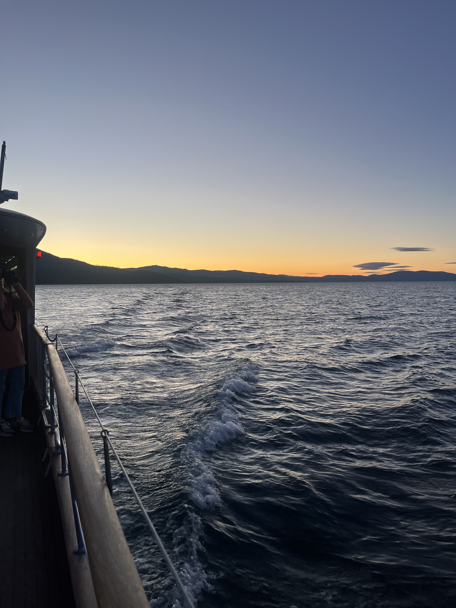

About Me
Learn more about the journey, experiences, and passions that define who I am.
 I’m an undergraduate student at Sacramento State University, majoring in Computer Science with a minor in Physics. My academic journey is driven by a deep passion for technology and a curiosity about the universe, which has led me to explore the intersections of computational physics and space research. My goal is to contribute to advancements in these fields and engage with the broader scientific community.
My work includes developing infrasound detection technologies and contributing to research with NASA’s Space Grant Consortium. As the Vice President of the Society of Women Engineers (SWE), I am committed to fostering community engagement and promoting STEM education.
I’m an undergraduate student at Sacramento State University, majoring in Computer Science with a minor in Physics. My academic journey is driven by a deep passion for technology and a curiosity about the universe, which has led me to explore the intersections of computational physics and space research. My goal is to contribute to advancements in these fields and engage with the broader scientific community.
My work includes developing infrasound detection technologies and contributing to research with NASA’s Space Grant Consortium. As the Vice President of the Society of Women Engineers (SWE), I am committed to fostering community engagement and promoting STEM education.
In addition to my professional and academic pursuits, I have a deep love for discovering new cuisines, capturing moments through photography, and learning languages. These interests enrich my life and provide a creative balance to my technical work. Whether it’s experimenting with a new recipe, exploring different cultures through my camera lens, or picking up a new language, I find joy and inspiration in these diverse experiences.
Feel free to reach out through the “Contact” page for any questions or to start a conversation.